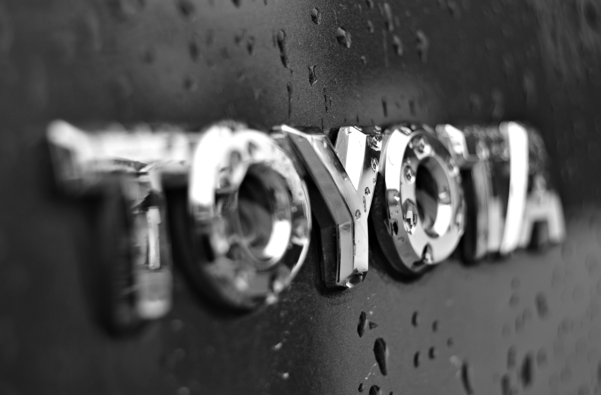

Hace 65 años se fundo Toyota Motor Corporation, liderado por el "rey de los inventos" Sakichi Toyoda, Toyota hoy en dia cuenta con una presencia mundial convirtiendola en el segundo mayor fabricante de vehiculos mas vendidos en el mundo, actualmente es la marca preferida de los Salvadoreños.